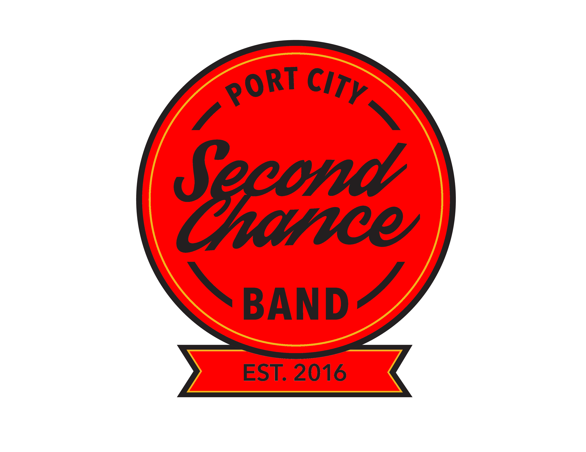
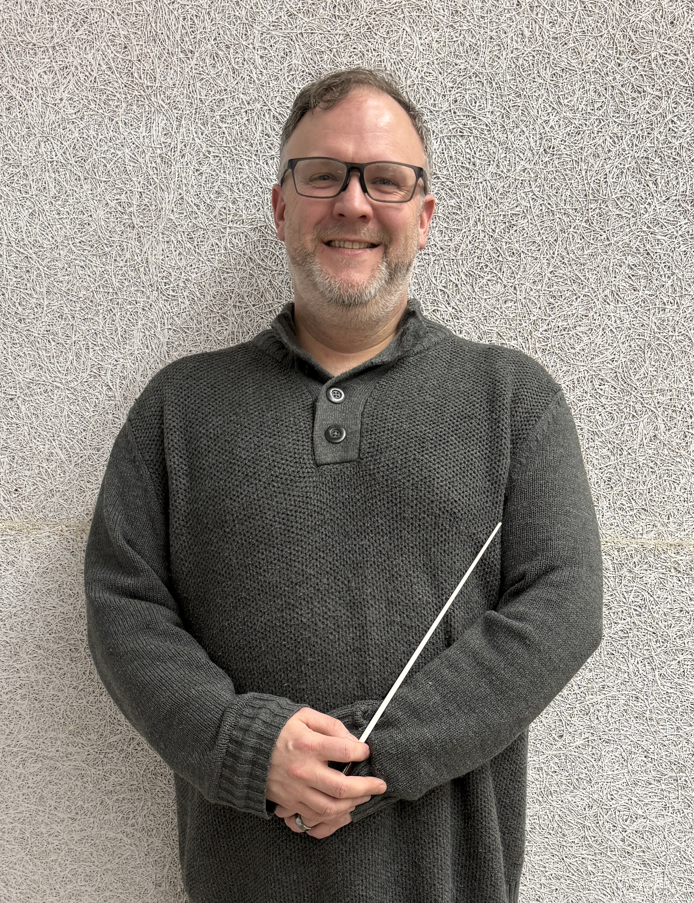

Logo to be replaced with a better quality image
A New Beginning
EST. 2016
For adults who always wanted to play — or play again.
Season 2025–2026
Our Story
For adults who always wanted to play — or play again — the Second Chance Band offers a welcoming, fun environment to discover or rediscover the joy of music.
Founded in September 2016, the Second Chance Band gives adults in the greater Saint John area the opportunity to learn a brass, woodwind, or percussion instrument in a supportive concert band setting. Members come from all walks of life and fall into three groups: those returning to an instrument after years away, those who play one instrument and want to try something new, and those picking up an instrument for the very first time.
The program proved so popular that a second band was launched in 2023 — meaning there are now two active Second Chance Bands. The original band, celebrating its 10th anniversary in 2026, performs at the intermediate level, while the newer band offers a true beginner experience. Together they perform several concerts throughout the year.
Both bands are under the direction of Andrea Lewis, who is also a former director of Saint Mary's Band.
Est. 2016 · 10th Anniversary
Grade 3 · Practices Monday evenings
Est. 2023 · Beginner Friendly
Grade 1.5–2 · Practices Wednesday evenings
Leadership

For more info reach out through the Saint Mary's Band contact page and mention Second Chance Band.